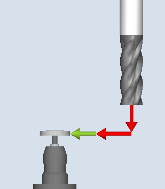
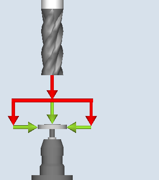
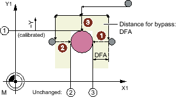
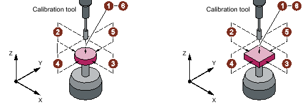
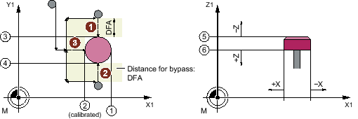

Function
This measuring version calibrates a tool probe machine-related or workpiece-related.
Values are corrected without empirical and mean values.
Measuring principle
The current clearances between machine zero (machine-related calibration) or workpiece zero (workpiece-related calibration) and the tool probe trigger point are determined with the aid of the calibration tool. The cycle positions the calibration tool to the probe.
| Note |
|
When using a disk as the probe type and the calibration method "axis-by-axis" or "complete – with restricted directions of approach on the plane", the positions of the probe on the plane must be precisely pre-entered into the setting data to ensure accurate measurement. Additional information is provided in the SINUMERIK Operate Commissioning Manual |
|  Calibrate: Probe (CYCLE971), axis-by-axis |  Calibrate: Probe (CYCLE971), complete |
Axis-by-axis calibration
For "axis-by-axis" calibration, the probe is calibrated in the parameterized measuring axis and measuring direction. The probing point can be centered in the offset axis. The actual center of the tool probe is determined first in the offset axis before the calibration is performed in the measuring axis.
① | General SD54627 $SNS_MEA_TP_TRIG_MINUS_DIR_AX2 |
② | General SD54626 $SNS_MEA_TP_TRIG_PLUS_DIR_AX1 |
③ | General SD54625 $SNS_MEA_TP_TRIG_MINUS_DIR_AX1 |
Calibrate probe (CYCLE971) with offset axis, example G17: Determine center in X, calibrate in Y
Complete calibration
The tool probes are automatically calibrated for the "complete" calibration. Using the calibration tool, the measuring cycle determines the tool probe trigger points in all axes or axis directions in which the probe can be approached.
Additional information: Commissioning Manual SINUMERIK Operate
$SNS_MEA_TP_AX_DIR_AUTO_CAL or SD54647 $SNS_MEA_TPW_AX_DIR_AUTO_CAL.
The tool axis (for G17: Z) must always be able to be approached in the minus direction. Otherwise no "complete" calibration is possible. Calibration is started in the 3rd axis, followed by the axes of the plane. "Complete" calibration is shown in the following figures (example: G17).
Tool probe, disk and cube version
Before the first calibration operation in the plane, e.g. plus direction of the 1st axis, the precise center of the probe is determined in the other axis (2nd axis), as long as the probe can be approached in this axis. Additional movements are performed in the plane for this purpose.
① | General SD54625 $SNS_MEA_TP_TRIG_MINUS_DIR_AX1 |
② | General SD54626 $SNS_MEA_TP_TRIG_PLUS_DIR_AX1 |
③ | General SD54627 $SNS_MEA_TP_TRIG_MINUS_DIR_AX2 |
④ | General SD54628 $SNS_MEA_TP_TRIG_PLUS_DIR_AX2 |
⑤ | General SD54629 $SNS_MEA_TP_TRIG_MINUS_DIR_AX3 |
⑥ | General SD54630 $SNS_MEA_TP_TRIG_PLUS_DIR_AX3 |
Determining the probe center in the 2nd axis of the plane, calibration +X
Requirements
The exact length and radius of the calibration tool must be stored in a tool offset data record. This tool offset must be active when the measuring cycle is called.
Tool type:
Calibration tool (type 725)
Milling tool (type 1xy)
The machining plane G17 or G18 or G19 must be defined prior to the cycle call.
The approximate coordinates of the tool probe must be entered in the general setting data before calibration starts (additional information is provided in the Commissioning Manual SINUMERIK Operate).
These values are used to automatically approach the probe with the calibration tool and their absolute value must not deviate from the actual value by more than the value in parameter TSA.
The probe must be reached within the total path 2 x DFA.
Starting position before the measurement
For "axis-by-axis" calibration, from the starting position, the cycle calculates the approach distance to the probe and generates the appropriate traversing blocks. It must be ensured that a collision-free approach is possible.

① | General SD54626 $SNS_MEA_TP_TRIG_PLUS_DIR_AX1 |
② | General SD54625 $SNS_MEA_TP_TRIG_MINUS_DIR_AX1 |
Starting positions for calibration in the plane, example: G17
| Note |
Calibrating in the 3rd axis of the measuring planeIf the tool diameter is larger, the calibration tool is positioned, offset by the tool radius, to the center of the probe. The value of the offset is subtracted. |
For "complete" calibration, the position before the cycle call should be selected so that a collision-free, centered approach is possible above the probe center by measuring path DFA. The axis sequence for the approach is first the tool axis (3rd axis) followed by the axes of the plane.
Position after the end of the measuring cycle
For "axis-by-axis" calibration, the calibration tool is positioned above the measuring surface by measuring path DFA.
For "complete" calibration, the calibration tool is positioned about the center of the probe by measuring path DFA.